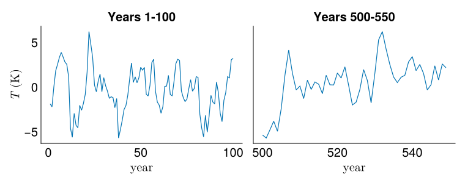
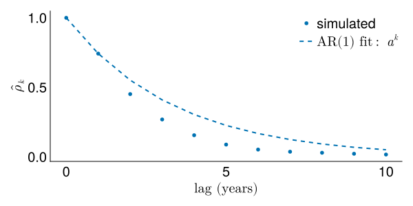
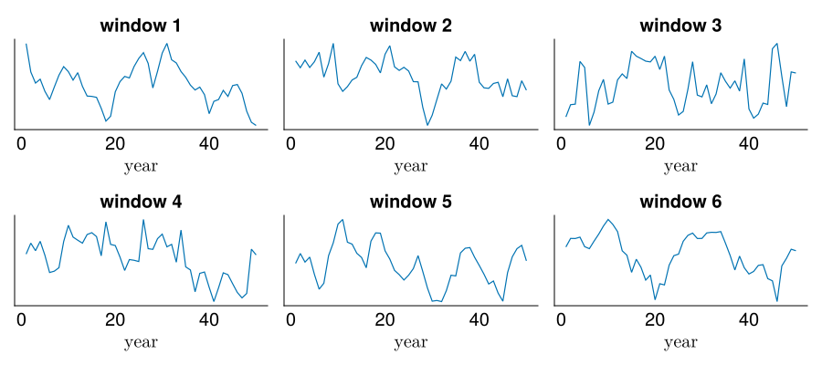
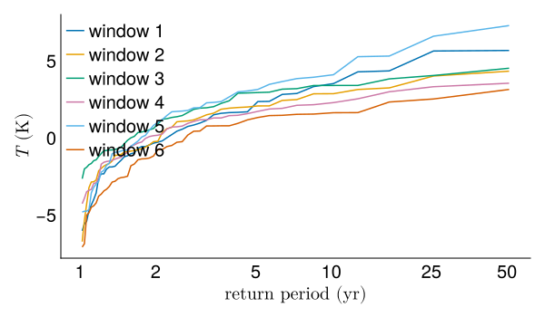
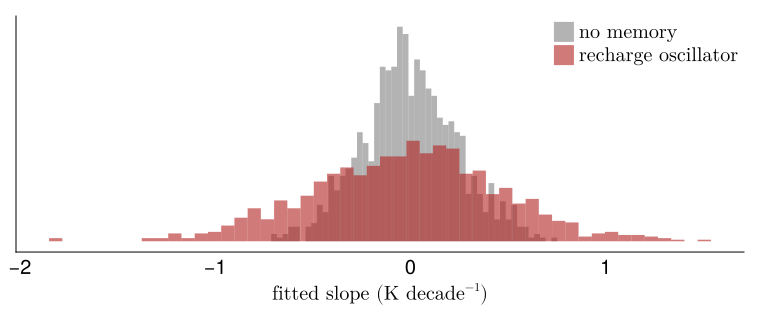

Lab 2: Climate as a dynamical system
The stochastic recharge oscillator is a two-variable model of the El Niño-Southern Oscillation (ENSO). It has fixed parameters and no trend, yet 50-year windows drawn from it routinely look like they contain one.
Objectives
By the end of this lab, you will be able to:
- Run a stochastic climate model and observe multi-decade variability from stationary dynamics.
- Measure how far a fitted 50-year trend can wander in records drawn from a system with no trend.
- Explain why persistence creates these apparent trends.
Setup
The model
The stochastic linear recharge oscillator describes ENSO with two state variables: a sea-surface temperature anomaly \(T\) in kelvins and a thermocline depth anomaly \(h\) in meters (Vialard et al., 2025).
\[ \frac{dT}{dt} = R\,T + F_1\,h + \sigma_T\,\eta_T, \qquad \frac{dh}{dt} = -\epsilon\,h - F_2\,T + \sigma_h\,\eta_h \]
The noise terms \(\eta_T\) and \(\eta_h\) are independent white noise.
The parameters are fitted to ORAS5 reanalysis data in Vialard et al. (2025), Table 2, with one modification: \(F_2\) is reduced from the published 17.58 to 0.50. At the published value the oscillator has a 3.5-year period and its annual means are negatively autocorrelated, which is the opposite of the multi-year persistence this lab needs. Reducing \(F_2\) weakens the coupling between \(T\) and \(h\) enough to overdamp the oscillation, so persistence decays monotonically.
| Parameter | Value | Source |
|---|---|---|
| \(R\) (Bjerknes feedback) | −1.13 yr⁻¹ | Vialard Table 2 |
| \(F_1\) (delayed oceanic feedback) | 0.19 K m⁻¹ yr⁻¹ | Vialard Table 2 |
| \(\epsilon\) (basin adjustment) | 0.38 yr⁻¹ | Vialard Table 2 |
| \(F_2\) (recharge efficiency) | 0.50 m K⁻¹ yr⁻¹ | reduced from 17.58 |
| \(\sigma_T\) (SST noise) | 2.22 K yr⁻¹ | Vialard Table 2 |
| \(\sigma_h\) (depth noise) | 14.37 m yr⁻¹ | Vialard Table 2 |
With \(R < 0\) the oscillator is damped: without noise it decays to rest.
The integrator
The Euler-Maruyama method is the stochastic version of the forward Euler method you may have seen for ODEs. At each time step \(\Delta t\):
\[ T_{i+1} = T_i + \underbrace{(R\,T_i + F_1\,h_i)}_{\text{deterministic}} \Delta t + \sigma_T \sqrt{\Delta t}\;\eta_i^T \]
The deterministic part advances by \(\Delta t\) (just like forward Euler) and the noise scales by \(\sqrt{\Delta t}\) rather than \(\Delta t\), which comes from the properties of Brownian motion.
The integrator steps at \(\Delta t = 1/12\) year (monthly) and returns annual means.
function simulate_sro(rng; n_years=1000, dt=1 / 12, σT=2.22, σh=14.37)
n_steps = round(Int, n_years / dt)
T = zeros(n_steps)
h = zeros(n_steps)
R = -1.13
F1 = 0.19
ε = 0.38
F2 = 0.50
sqrt_dt = sqrt(dt)
for i in 2:n_steps
T[i] = T[i - 1] + (R * T[i - 1] + F1 * h[i - 1]) * dt + σT * sqrt_dt * randn(rng)
h[i] = h[i - 1] + (-ε * h[i - 1] - F2 * T[i - 1]) * dt + σh * sqrt_dt * randn(rng)
end
steps_per_year = round(Int, 1 / dt)
T_annual = [mean(T[((y - 1) * steps_per_year + 1):(y * steps_per_year)]) for y in 1:n_years]
h_annual = [mean(h[((y - 1) * steps_per_year + 1):(y * steps_per_year)]) for y in 1:n_years]
return T_annual, h_annual
endsimulate_sro (generic function with 1 method)Run it long
Simulate 10,000 years with a pinned seed so every render gives the same record.
The first 100 years beside a 50-year window starting at year 500. The window looks like a different record from the one it came from.
fig = Figure(; size=(760, 300))
ax1 = Axis(fig[1, 1]; xlabel=L"\text{year}", ylabel=L"T \text{ (K)}", title="Years 1-100")
lines!(ax1, 1:100, T_long[1:100]; linewidth=1.2)
ax2 = Axis(fig[1, 2]; xlabel=L"\text{year}", title="Years 500-550")
lines!(ax2, 500:549, T_long[500:549]; linewidth=1.2)
hideydecorations!(ax2)
fig
How persistent is this series?
The autocorrelation function measures how strongly the series remembers its past. At lag 1, the correlation tells you how much this year’s value predicts next year’s. If the series were independent (white noise), every lag would be near zero.
lags = 0:10
ρ = autocor(T_long, lags)
a_fit = ρ[2]
fig = Figure(; size=(600, 300))
ax = Axis(fig[1, 1]; xlabel=L"\text{lag (years)}", ylabel=L"\hat\rho_k")
scatter!(ax, collect(lags), ρ; markersize=8, label="simulated")
lines!(ax, collect(lags), a_fit .^ collect(lags); linewidth=2, linestyle=:dash, label=L"\text{AR(1) fit: } a^k")
axislegend(ax; position=:rt)
fig
The simulated autocorrelation decays exponentially and tracks the AR(1) curve \(a^k\) closely. The lag-1 autocorrelation is about 0.74, which means the series has multi-year memory: a warm decade tends to stay warm.
What does a 50-year window tell you?
Pull several random 50-year windows from the long run and plot them side by side.
rng_sample = MersenneTwister(543)
n_window = 50
n_panels = 6
max_start = length(T_long) - n_window
starts = rand(rng_sample, 1:max_start, n_panels)
fig = Figure(; size=(900, 400))
for (i, s) in enumerate(starts)
row = (i - 1) ÷ 3 + 1
col = (i - 1) % 3 + 1
ax = Axis(fig[row, col]; xlabel=L"\text{year}", title="window $i")
window = T_long[s:(s + n_window - 1)]
lines!(ax, 1:n_window, window; linewidth=1.2)
hideydecorations!(ax)
end
fig
All six windows came from the same stationary model with fixed parameters and no trend. Some look like they are warming, some cooling, some flat.
Return levels vary too
Estimate the 20-year return level from each window using the Weibull plotting position.
colors = Makie.wong_colors()
fig = Figure(; size=(600, 350))
ax = Axis(fig[1, 1]; xlabel=L"\text{return period (yr)}", ylabel=L"T \text{ (K)}",
xscale=log10, xticks=([1, 2, 5, 10, 25, 50], string.([1, 2, 5, 10, 25, 50])))
for (i, s) in enumerate(starts)
window = sort(T_long[s:(s + n_window - 1)]; rev=true)
T_hat = (n_window + 1) ./ (1:n_window)
lines!(ax, T_hat, window; linewidth=1.5, color=colors[i], label="window $i")
end
axislegend(ax; position=:lt)
fig
The 20-year return level estimate differs substantially across windows, even though the underlying distribution is the same.
How far can a fifty-year slope wander?
To measure it, fit a straight line to each window and record its slope.
ols_slope (generic function with 1 method)Draw 1,000 random 50-year windows from the long simulation and fit a slope to each.
For comparison, draw the same number of 50-year records with no memory at all, matched to the same variance.
fig = Figure(; size=(760, 320))
ax = Axis(
fig[1, 1];
xlabel=L"\text{fitted slope (K decade}^{-1}\text{)}",
ylabel=L"\text{density}",
)
hist!(
ax, slopes_independent .* 10; bins=50, normalization=:pdf,
color=(:gray, 0.6), label=L"\text{no memory}",
)
hist!(
ax, slopes .* 10; bins=50, normalization=:pdf,
color=(:firebrick, 0.6), label=L"\text{recharge oscillator}",
)
hideydecorations!(ax)
axislegend(ax; position=:rt)
fig
slope spread (K/decade): oscillator 0.482, no memory 0.244, ratio 1.98Both distributions are centered on zero, because the model has no trend and neither does the comparison. The oscillator’s is much wider. Many windows have slopes of 0.2-0.5 K per decade in either direction, large enough to look like a real warming or cooling signal if you saw one on its own.
These slopes come from persistence: because the series has multi-year memory, a run of warm years is likely to be followed by more warm years, which looks like a trend even though the system is remembering where it was.
Exercises
You are encouraged to use an AI tool like Claude Code to help you write code and check syntax, though ultimately your code is your own (see our AI policy).
Write your answers in the Your answer block under each exercise, replacing the italic placeholder.
Vary the noise amplitude
Double \(\sigma_T\) from 2.22 to 4.44 and rerun the experiment. Does the spread of fitted slopes change? Does the ratio between the oscillator’s spread and the no-memory spread change?
Your answer.
Answer here
Vary the record length
Run the same experiment with 100-year windows instead of 50. Report the slope spread and compare it to the 50-year result. Does doubling the record length halve the spread?
Your answer.
Answer here
Compare to a fitted AR(1)
Fit an AR(1) to the annual \(T\) series from the long run by computing the lag-1 sample autocorrelation. Simulate a 10,000-year AR(1) series at that coefficient, draw 1,000 random 50-year windows, and compare the slope spread to the recharge oscillator’s. How close are the two, and what does the comparison tell you?
Your answer.
Answer here
Turning it in
This lab is due on Canvas one week after the Friday session that starts it.
Check that every Your answer block is filled in.
Render the notebook to a PDF. In the terminal, from the lab folder, run:
This writes
index.pdfbeside the notebook.Commit and push your work, with GitHub Desktop or by asking Claude to commit and push.
Upload
index.pdfto the Lab 2 assignment on Canvas.Paste the link to your repository in the same Canvas submission.
If the render fails and you cannot fix it, upload what you have and say where it broke. A lab that does not render is worth more to me than a lab you did not turn in.